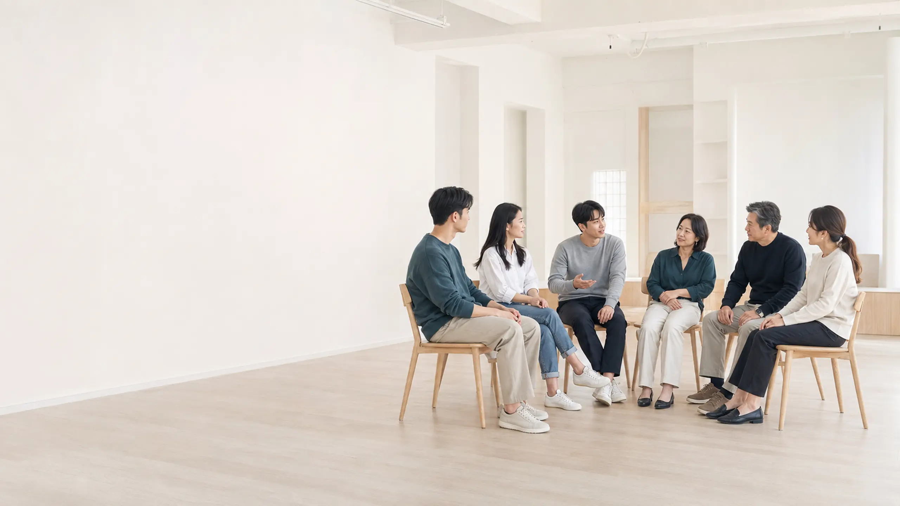
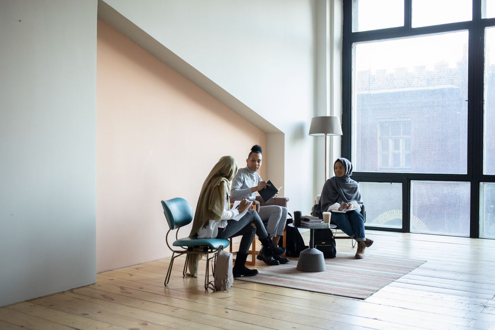
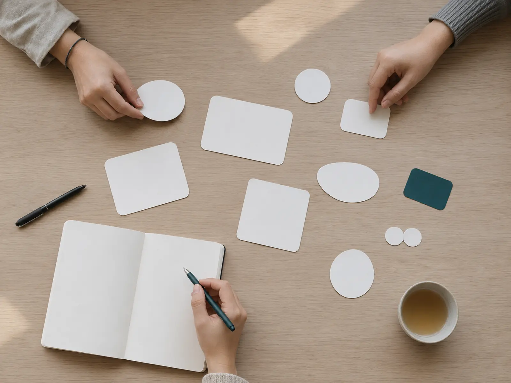
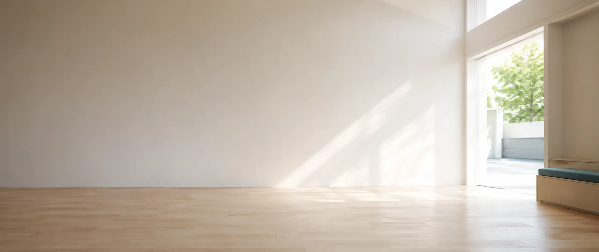

01 MISSION
Mission
개인이 자신의 삶을 이해하고,
사람들과 건강하게 연결될 수 있도록 돕습니다.
삶의 이해가 관계의 변화로 이어지도록

LIFE & COMMUNITY
L&C 소통 아카데미는 나와 다른 사람을 이해하고,
더 나은 삶과 건강한 관계를 만들어가는 성장의 공간입니다.
ABOUT L&C
L&C는 Life & Community를 의미합니다.
Life는 자신의 삶과 방향을 이해하는 것이며,
Community는 사람과 사람을 연결하고 함께 성장하는 것을 의미합니다.
L&C 소통 아카데미는 개인의 변화가 한 사람에게만 머무르지 않고, 관계와 공동체의 긍정적인 변화로 이어질 수 있다고 믿습니다.
나를 이해하고, 서로의 차이를 존중하며,
사람과 건강하게 연결되는 경험을 만들어갑니다.
MISSION & VISION
개인의 성장과 건강한 관계의 형성을 돕는 L&C의 방향을 소개합니다.
01 MISSION
개인이 자신의 삶을 이해하고,
사람들과 건강하게 연결될 수 있도록 돕습니다.
삶의 이해가 관계의 변화로 이어지도록

02 VISION
개인의 성장이 관계와 공동체의
긍정적인 변화로 이어지는 플랫폼이 됩니다.
개인에서 공동체로 확장되는 성장
OUR VALUES
L&C는 일방적으로 정답을 전달하기보다, 나와 다른 사람을 이해하고 함께 성장할 수 있는 변화를 추구합니다.
나와 다른 사람을 깊이 바라봅니다.
자신의 생각과 삶을 돌아보고, 서로 다른 경험과 관점을 이해합니다.
사람과 사람 사이의 건강한 관계를 만듭니다.
서로의 이야기를 나누고, 존중을 바탕으로 관계를 이어갑니다.
서로의 차이와 삶의 방식을 인정합니다.
누구나 자신의 모습과 속도로 참여할 수 있는 열린 환경을 만들어갑니다.
개인과 공동체가 함께 나아갑니다.
개인의 긍정적인 변화가 관계와 공동체의 성장으로 이어지도록 돕습니다.

L&C PROGRAM
인문학적 관점에서 삶과 인간을 탐구하고, 자기 이해에서 관계와 공동체의 성장까지 단계적으로 배웁니다.

LIFE & COMMUNITY
L&C는 삶과 사람 사이에 새로운 연결을 만들고,
개인과 공동체가 함께 성장할 수 있는 길을 만들어갑니다.